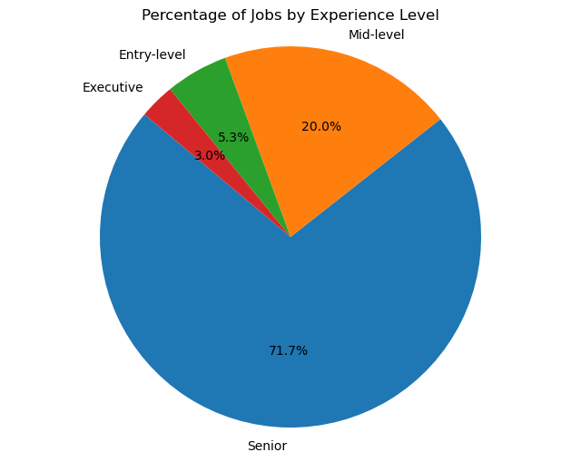

Our names our Keily Hernandez and Nidhi Pillai and welcome to our project website!
Topic: How does job experience level relate to salary trends in the data science industry?
Data science is a constantly evolving field and aspiring professionals must understand job expectations and trends based on their experience level. Our topic delves into the data industry and examines the intersection that job experience level has on salary expectations, helping professionals identify a potential trajectory for their careers. As students in the DS4200 course, this topic is of high importance because it provides valuable insights into what to expect while embarking on a career in the data science industry.Our tasks for this project involve discovering any features that highly affect salary trends in different experience levels and giving our audience expectations for how the data science jobs market is currently.Our analysis will provide a roadmap for career progression in the data science field and serve as a valuable resource for students and professionals.
Data Overview
The dataset we utilized for our analysis is sourced from Kaggle and is available at the following link: https://www.kaggle.com/datasets/hummaamqaasim/jobs-in-data. The size of the data is 12 columns and 9355 rows. The columns provide information about job characteristics in the data-science domain. These include the work_year (the year the data was recorded), job_title (the specific job role), and job_category (a broader classification of the role), salary_currency (the currency in which the salary is paid), salary column (the annual gross salary in the local currency), salary_in_usd (annual gross salary converted to United States Dollars (USD)), employee_residence (country of residence of the employee), experience_level, employment_type (nature of employment), work_setting characterizes (work environment as 'Remote,' 'In-person,' or 'Hybrid’), company_location (country where the company is based), and company_size (the employer's size). This diverse set of information allows for a deep-dive analysis of the factors influencing salaries in data-related roles across different domains.
We can get a general introduction to our data from the pie chart above. We can see that around 71.7% are of the "Senior" experience level, 20.0% are of the "Mid-level", 5.3% are of the "Entry-level" experience level, and 3.0% are of the "Executive" experience level. The main takeaways from the visualization are that the majority of the data jobs are at the "Senior" experience level and the minority are at the "Executive" experience level. The presence of a large number of "Senior" and "Mid-level" positions can indicate vast opporutnities for more seasoned professionals.
Data Analysis
What is the Distribution of Entry-Level Salaries?
The static distribution graph reveals that most salaries in the dataset fall within the $50,000 - $75,000 USD range. We can also see that the graph is right-skewed, meaning that most vales lie in the lower range of salaries. This may be due to outliers of higher salaries of around $250,000 for entry-level employees. Moreover, incorporating the density line highlights areas of higher density and provides insights into the distribution pattern beyond what is visible in the histogram alone. This visualization enables a detailed analysis of salary distribution for entry-level jobs among data-related roles in USD.
Have Entry-level Salaries changed over time?
The side-by-side box plot visually represents the distribution of entry-level salaries in the data industry over four years. From our graph, we can see that each year, different salaries are distributed for entry-level positions. In 2021, the salary range for entry-level positions is relatively narrow, spanning from $50,000 to $90,000. However, in 2022, we observe a significantly wider range, with salaries ranging from $50,000 to $120,000, indicating potential growth in entry-level salaries during that year. Although the year 2023 does not have the biggest nor the smallest range, we can see that it has the highest salary for entry-level employees in our data, with $125,000. Overall, this analysis of the side-by-side box plot provides insights into the variability and trends in entry-level salaries within the data industry.
Distribution of Senior Data Engineer Salaries

The chart showcases the diversity of pay scales for Senior Data Engineers worldwide (in the top 10 highest-paying countries). The United States has a broad range of salaries, with a large interquartile range, indicating significant variation within the country. It also has many outliers extending well beyond the upper quartile, suggesting extremely high salaries. Despite being in the top ten, Puerto Rico shows a much lower median salary and a compact interquartile range compared to the United States, implying less salary variation. Canada, Germany, the United Kingdom, and Ireland have similar median salaries with moderate spreads in their interquartile ranges. However, Canada and the UK show more outliers above the upper quartile, indicating the presence of higher-paying positions. South Africa, Sweden, Italy, and Brazil show considerably lower median salaries than the other countries listed. Notably, Brazil has a very tight interquartile range with no visible outliers, which suggests a high degree of consistency in the salaries for Senior Data Engineers there.
Average Salary by Country
Click the link below to interact witht the visualization
The scatter geo chart represents the average salary for data jobs by country, with bubble sizes indicating the average size of companies in those locations. The color of the bubbles corresponds to salary levels, with a gradient color scale ranging from purple (lower salaries) to yellow (higher salaries). As yellow-toned bubbles indicate, the highest salaries are concentrated in North America and parts of Europe. The average company size also appears to be larger in these regions, as denoted by the size of the bubbles. Conversely, regions with smaller bubbles, such as some parts of Asia, South America, and Africa, signify smaller average company sizes and tend to have lower average salaries, as shown by the purple coloration. Distributions in the data field and the relative size of companies across different countries.
Top Ten Data-Related: Job Titles
Click the link below to interact witht the visualization
The bar chart compares the average salaries for mid-level and senior professionals across ten different data-related job titles. Data Scientist and Data Engineer positions, particularly at the senior level, command the highest average salaries among the roles presented. For each job title, senior-level positions have a noticeably higher average salary than mid-level ones, which indicates a clear value placed on experience within the data field. The smallest difference between mid-level and senior salaries appears in Data Analyst and Analytics Engineer roles, suggesting a lesser impact of experience on salary for these particular titles.
Next Steps
In conclusion, our analysis has successfully met its objective by demonstrating that experience levels significantly impact salaries within the data job industry. However, we must delve into specific job categories to refine our understanding further. Our findings underscore the importance of the country of origin and experience level as the features with the greatest influence on salary in USD. Moving forward, it is vital to incorporate the average cost of living in each country to provide a more nuanced view of the data. As a next step, incorporating an analysis of the highest degree obtained could yield additional insights into salary variations and enhance the comprehensiveness of our study.
References